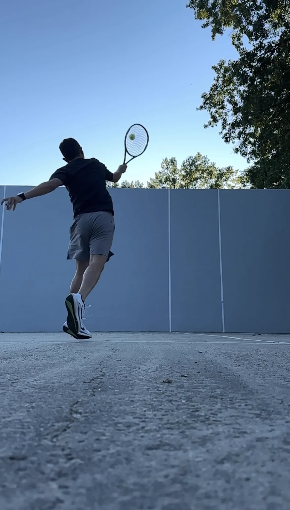
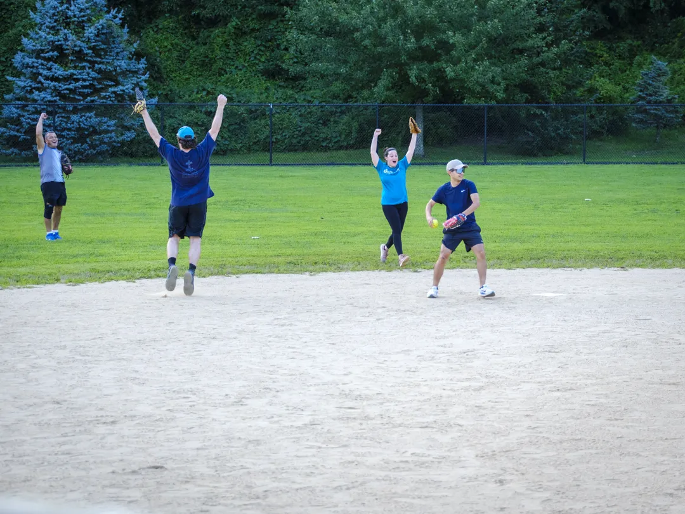
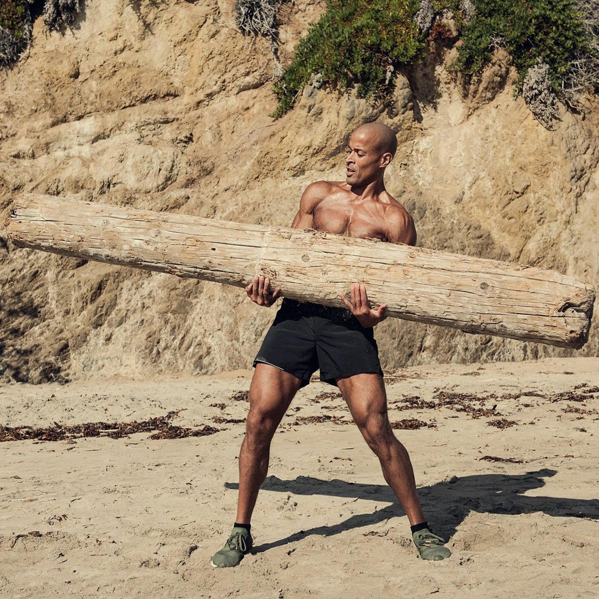
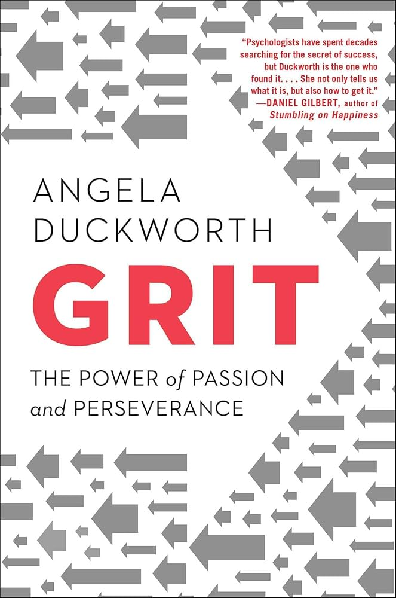
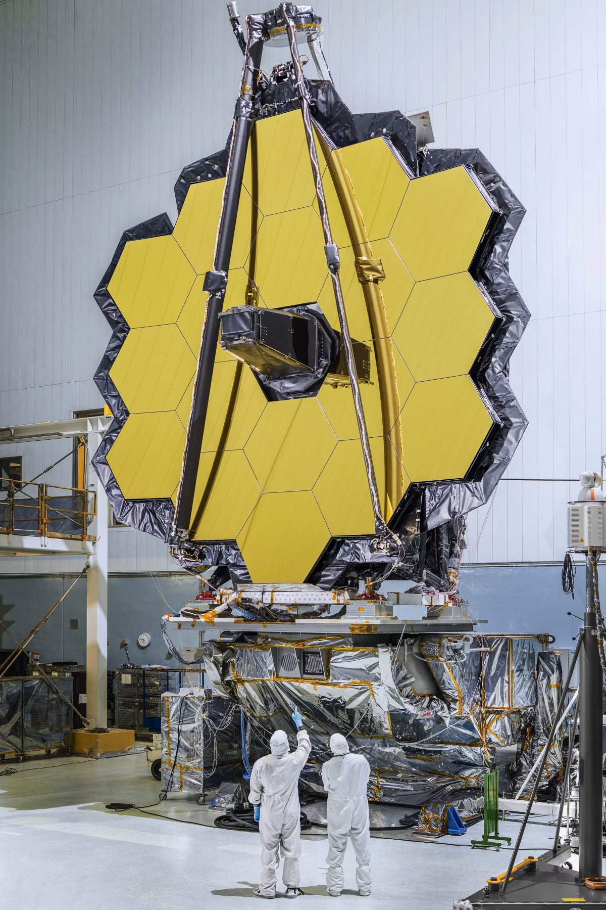

Fitness
Stay moving.
Road Cycling

Tennis
Camping + Mountain Bike

Softball Squad
Activity Highlights
By the numbers.
Cycling 100 Miles
August 24, 2024
103.9
Miles
4,836
Feet Climbed
6h 21m
Time
Running in Miami
July 24, 2025
1.9
Miles
38
Feet Climbed
16m
Time
Words I Live By
"The truth is like poetry, and most people f***ing hate poetry."
"People can only meet you as deeply as they've met themselves."
"Not all progress is measured by ground gained; sometimes progress is measured by losses avoided."
Research
What shaped me.
A few works that shaped how I think and build: the books that forged my mindset and the research that reminds me why curiosity matters.

Can't Hurt Me
How this book changed my life and helped me become the person I am today.
It taught me to take full ownership, lean into discomfort, and build daily discipline even when motivation fades. The mindset of doing hard things on purpose, building reps of resilience, helped me push through setbacks and stay consistent with the habits that actually move me forward.
It pushed me to set clear goals, track the days, and do the work even when it is uncomfortable. The simple habit of showing up became the base for everything I build.

Grit
It taught me that hard work will always beat being smart, and working smart has helped my work be noticed.
Showing up, practicing deliberately, and staying committed to long term goals made the difference. Pairing persistence with smarter systems like feedback loops, clear priorities, and compounding effort helped my work stand out and deliver results people trust.
I learned to break big goals into small steps, review my work weekly, and keep moving when progress is slow. Over time the compounding effort spoke louder than talent.

James Webb Space Telescope
It reminds me how big the universe is and how small our known world really is.
It inspires me to dream about what can be and keeps my curiosity alive.
It puts my day in perspective, and it makes me want to aim higher with the tools I have, to build things that last and to keep learning.
View Research